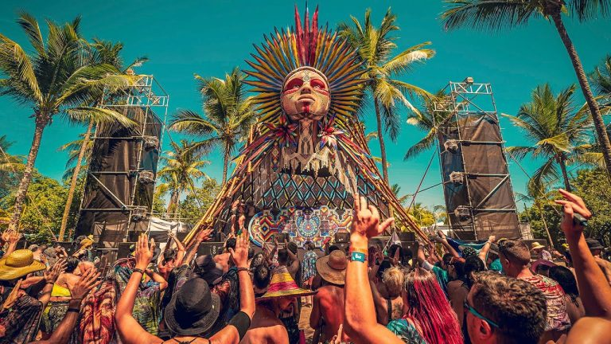

Origem do Psy Trance
O psytrance (psychedelic trance) surgiu no final dos anos 1980 e início dos 1990, como evolução da cena trance e das festas psicodélicas realizadas em Goa, na Índia. Na época, DJs e viajantes do mundo todo se reuniam nas praias de Goa, misturando elementos de acid house, industrial, techno e influências orientais

À medida que a tecnologia de produção musical avançou, os produtores começaram a criar sons mais rápidos, hipnóticos e cheios de efeitos psicodélicos. Essa nova estética sonora deu origem ao que se tornaria o psytrance moderno, caracterizado por batidas entre 138–150 BPM, linhas de baixo contínuas e atmosferas mentais.
No início dos anos 1990, com restrições às festas em Goa, o movimento se espalhou para Israel, que se tornou um dos maiores polos do estilo. De lá, o psytrance conquistou o mundo, gerando subgêneros como Full On, Dark Psy, Progressive Psy, Forest e muitos outros
Hoje, o psytrance é um fenômeno global presente em festivais como Boom Festival, Ozora e Universo Paralello, mantendo viva a fusão entre tecnologia, psicodelia e cultura alternativa que marcou seu nascimento.
Portal Sonoro
Mergulhe nesta experiência sonora e energética com um set de psytrance, pensado para despertar sentidos e expandir a consciência. Cada batida, cada linha de baixo e cada efeito psicodélico funciona como um portal, conduzindo o corpo à dança e a mente a estados de presença e introspecção. Aperte o play e permita que a música se transforme em um ritual vivo, onde ritmo e espírito se encontram.